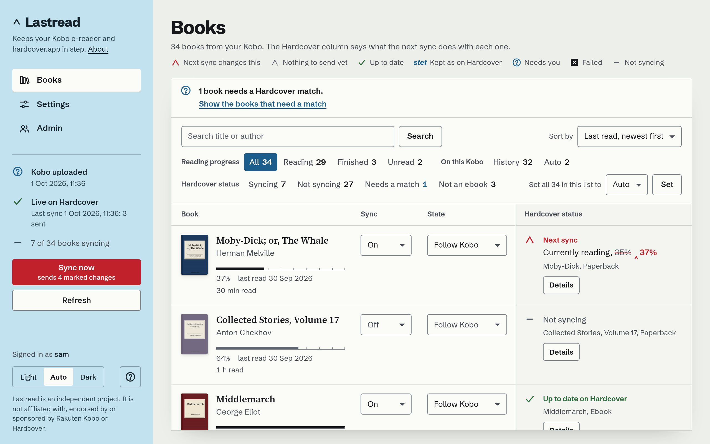
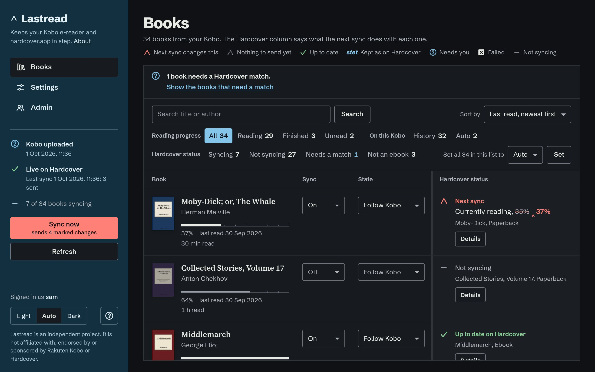
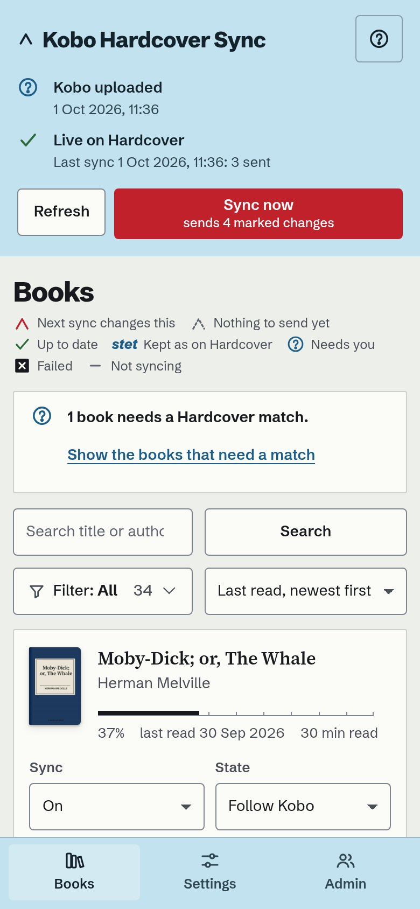
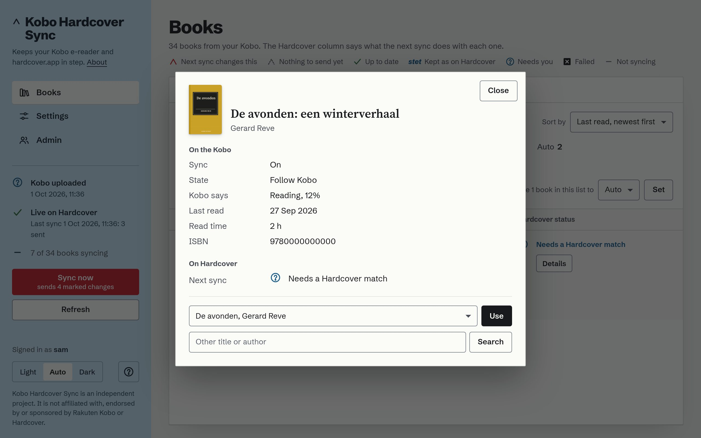
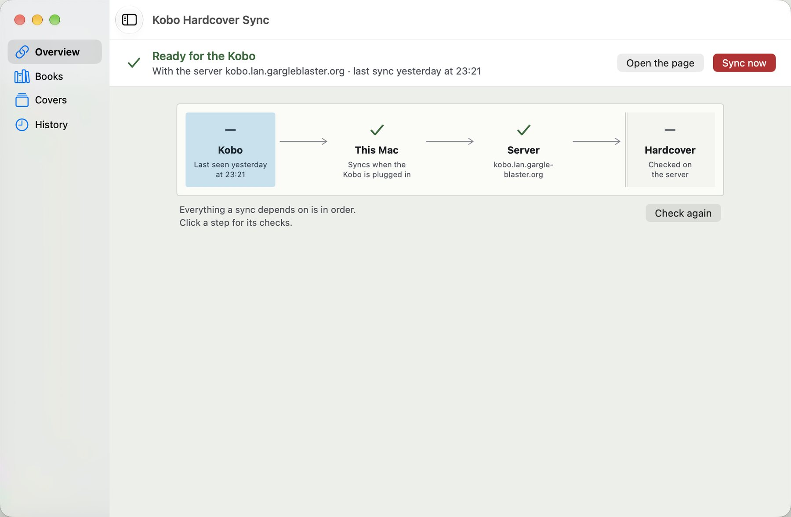
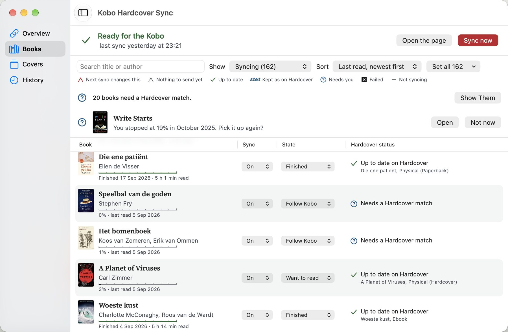
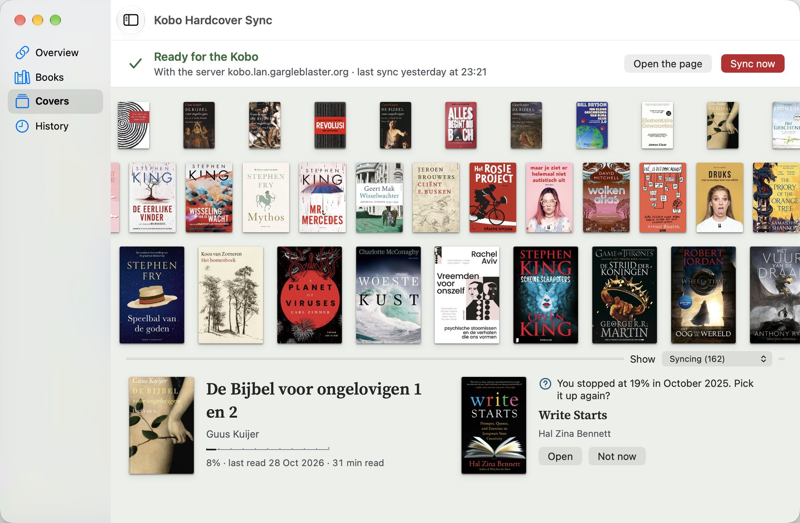

Your Kobo knows what you read. Now Hardcover does too.
Plug in the Kobo and your shelf on Hardcover, the book-tracking site, follows: which books, how far, finished when. Works with the Kobo as it comes, Kobo-store books included, on your own computer: its page shows you every change before it is sent.
The latest release's disk image, on GitHub. Signed and notarised; macOS 13 or later.
Reads your Kobo and writes nothing to it unless you ask. Starts as a dry run. Beta; Mac and Linux only.
Or in a terminal, on a Mac or Linux:
brew install merlijntishauser/tap/kobo-hardcover-sync
uv tool install kobo-hardcover-sync
- Next sync changes this
- Up to date on Hardcover
- Needs a match
- Not syncing
| Book | Sync | State | Hardcover status |
|---|---|---|---|
|
Middlemarch
|
Sync: On | State: Follow Kobo |
Next sync: Read, finished 21 Sep 2026. Hardcover has Currently reading, 88%.
Middlemarch, Ebook
Details
|
The Kobo, as it comes
Kobo-store books and your own files alike, read over the cable from the Kobo's own database. Nothing is installed on it.
Your computer
The sync runs here, on your Mac or Linux machine. Its page shows what the next sync changes before anything is sent. No account with this project, no cloud of its own.
Hardcover
Your shelf there follows: which books, how far, finished when. What you change on Hardcover is kept, not overwritten.
Its own page, on your computer: your shelf by day and at night
Each book is a line, and the Hardcover column says what the next sync will do with it: a red caret where something changes, a tick where Hardcover is up to date, a circled query where it needs you. Switch a book on or off, pin a finish date, choose a match. It works without JavaScript and on a phone.




The Mac app
Plug in the Kobo and it syncs, whether the window is open or not; a notification says what it did and when the Kobo is safe to unplug. The window shows the chain a sync takes, your books with their covers, and the history of syncs. It is the same tool as the command line, with a window.
- Overview: Kobo, this Mac, Hardcover, each with its checks and a button where the app can mend what it found.
- Books and Covers: the shelf as a list, or as a press run of covers; Spotlight finds a book and opens it there.
- Updates: the app says when there is a newer release and installs it when you ask, after checking Apple's notarisation and the signature.
Download for Mac A disk image; drag the app to Applications. Linux: the command line, with the same page.



The author's own shelf, in the theme this page is in; the app follows the Mac's.
How it goes, from the first run to the shelf
-
Install it, sign in on Hardcover once
A link and a short code on Hardcover's own site, or a token pasted in; either stays on your computer. Then choose which of the books you have already read Hardcover should hear about: they start switched off.
-
Plug in the Kobo
It reads the Kobo's own database over the cable and syncs. A notification says "8 books updated. Ejected: safe to unplug." Most days that is all you see of it.
-
Its page, when you want it
Open it to see what the next sync will do with each book and why, to switch a book on, pin a finish date, or choose a match it would not guess.
-
Hardcover, in step
Status, progress and dates. What you change on Hardcover is taken over at the next sync, not overwritten. One read-through per book, never a duplicate.
What it does
- Sends status, progress and dates to Hardcover for the books you switched on.
- Starts as a dry run: it shows what it would send, and sends nothing until you go live.
- Keeps your reading minutes, exports your reading as JSON, and can put a collection of your synced books on the Kobo if you ask for it.
- Writes every rule down, each held by a test: the sync rules.
It never guesses a match
A book it cannot place by ISBN, or by title and author together, waits for you. Two editions? It asks.
What it leaves alone
- The Kobo. No add-on, no other reading software, no change to how you read.
- Highlights, notes and ratings. It does not manage books either; it works with what is on the Kobo.
- Your data. No account with this project and no cloud of its own: your computer or your own server, your own Hardcover token. Its page loads nothing from elsewhere.
- Your history. Books read before the tool came start switched off; you choose which of them Hardcover should know about.
Is this the right tool for you?
There are other good ways to get reading progress onto Hardcover. As far as their own documentation said on 2 October 2026:
| Tool | What it needs | Choose it when |
|---|---|---|
| Kobo Hardcover Sync | A computer to plug the Kobo into. Nothing on the Kobo. | You read Kobo-store books on an unmodified Kobo, or your Kobo's software is too new for the tools below. |
| NickelHardcover | An add-on installed on the Kobo itself. Its README says firmware 5.x is not supported yet. | Your Kobo's firmware is supported and you are happy to modify the device. It syncs over Wi-Fi without a computer, and also does highlights, notes and reviews. |
| KOReader with the Hardcover plugin | KOReader on the device. KOReader cannot open the store's DRM books. | You read your own, DRM-free books in KOReader. |
| Calibre-Web Automated | A Calibre library on a server that the Kobo syncs with. | Your books live in Calibre and reach the Kobo from there. |
Tested with a real Kobo Clara Colour and macOS, and used daily by its author. Linux desktop support is built and not yet seen with a real Kobo. There is no Windows build. It is beta software: read the README, in particular the part on the collection, the one thing it can write to the Kobo.
Yours, on your machine
Open source under the MIT licence. Install it, plug in the Kobo, and read what the next sync will do before it does it.
Reads your Kobo and writes nothing to it unless you ask. Starts as a dry run. Beta; Mac and Linux only.
brew install merlijntishauser/tap/kobo-hardcover-sync uv tool install kobo-hardcover-sync